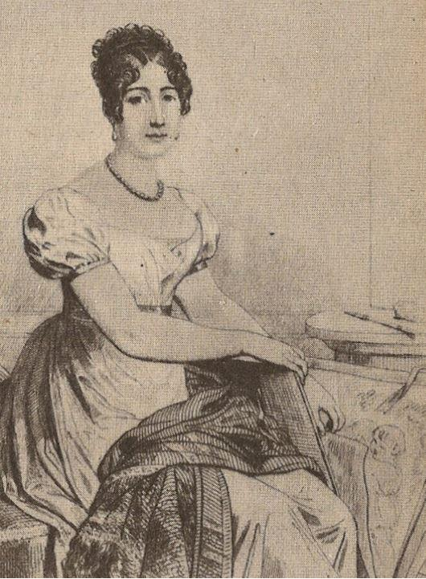

Dans la préface de la biographie qu’il consacre à Joseph Fouché, Stephan Zweig nous avertit d’une chose, et son avertissement n’a jamais été autant d’actualité :
« Je présente donc l’histoire de Joseph Fouché comme une utile et très actuelle contribution à la psychologie de l’homme politique. » p. 13
C’est là, et certainement avec raison, accorder peu de valeur aux hommes politiques. Mais toute ressemblance avec des politiciens existant, ayant existés ou qui pourraient exister un jour ne serait bien sûr que pure coïncidence ! Même si certains lecteurs de cette recension seraient tentés de reconnaître dans le portrait de Fouché quelques uns de nos hommes politiques les plus en vu, voire même des présidents ou des ministres. Si beaucoup ont une propension à la trahison égale à celle de Fouché, peu ont son talent pour le faire.
Dans la catégorie des traîtres, des parjures, des assassins sans scrupules, personne ne peut se revendiquer supérieur à Joseph Fouché. S’il est un homme illustrant la trahison universelle, la cruauté, le sadisme et l’arrivisme c’est bien la personne du Duc d’Otrante, spectateur et acteur de la Révolution française et au-delà... ( Fouché a été fait Duc par Napoléon, Otrante est un port de la province des Pouilles, en Italie)
Enfant malade et chétif, il souffrit de la tuberculose. Il étudia chez les oratoriens, où sa mère l’avait placé. Ordonné dans les ordres mineurs, il enseigna dans plusieurs établissements religieux pendant plus de dix ans. Faux prêtre -il ne prononcera jamais ses vœux définitifs dans les ordres majeurs- et ne s’engagera totalement dans une cause que lorsqu’il sera sûr de son triomphe. Il n’hésitera pas à épouser la cause adversaire si un revers de fortune touche celle du premier choix. Il n’épousera jamais une idée mais les trahira toutes. C’est donc, à priori, le portrait d’une canaille consommée que nous livre avec finesse et une belle écriture S. Zweig. La beauté de ses formules descriptives reste aussi percutante et enchanteresse que dans ses autres biographies :
« Le tiers état est encore exclu de tout, dans le royaume corrompu et mal administré ; il n’est pas étonnant qu’un quart de siècle plus tard le poing exige ce qu’on a refusé trop longtemps à la main humblement suppliante. » p. 15
Mais cette biographie de Fouché, si riche soit-elle, si dense et fournie d’un point de vue politique et historique pêche gravement par défaut. Ce défaut majeur est celui de la vie privée et affective du ministre de toutes les polices. Sur ce point de vue, les matériaux fournis par le biographe sont d’une pauvreté déconcertante. Zweig, qui nous a habitués à associer la psychologie des personnages qu’il nous décrits à leur environnement sentimental, nous laisse cette fois sur notre faim.
« Lors de son premier exil, dans sa mansarde étaient morts ses deux premiers enfants, qu’il aimait par-dessus tout, et dans son troisième exil voici que sa compagne disparaît. (en 1812) » p. 202
S’il nous fait savoir que Fouché fut marié à deux reprises et eut cinq enfants qu’il aima beaucoup, nous ne saurons rien de plus sur sa vie sentimentale que quelques phrases lâchées au détour des près de 300 pages de l’ouvrage. Nous y apprenons que lors de son deuxième exil intérieur, à Aix en Provence -exil qui lui permit de devenir la deuxième fortune de France- il s’occupa beaucoup des trois enfants qui lui restaient :
« Tout comme un brave hobereau de campagne, il va se promener tranquillement dans ses prairies avec ses enfants (il en a eu trois autres, les deux premiers étant morts de privations.) » p. 148
Fouché, l’ancien pilleur d’églises se remariera une deuxième fois, en 1815, avec une aristocrate de haut rang, la Comtesse de Castellane. Il fera d’ailleurs beaucoup mieux que de se marier religieusement, le Roi Louis XVIII sera le témoin de son mariage :
« En même temps qu’extrémiste et communiste, Joseph Fouché, qui, devenu duc d’Otrante, riche à millions, se mariera une deuxième fois, pieusement, à l’église, sous le patronage d’un roi [...] .» p. 44
En réalité, la Comtesse de Castellane épousa la deuxième fortune de France, en ignorant que quelques mois plus tard, elle suivrait le vieillard dans son dernier exil étranger et la solitude.
Le bruit courut que, dans cet exil, elle trouva rapidement un jeune homme avec qui elle partagea une amitié amoureuse. Mais là s’arrêtent les descriptifs de la vie familiale et affective que nous livre S. Zweig sur celui qui fut trois fois ministre de la police de Napoléon et également ministre de la police de Louis XVIII.
Fouché, tout au cours de sa vie, connaîtra plusieurs disgrâces et exils, mais reviendra toujours dans les coulisses du pouvoir et parfois sur le devant de la scène. Sa première expérience aura lieu à la Révolution. Exclu du club des jacobins, il devint l’ennemi de Robespierre alors que quelques années auparavant il fréquenta sa sœur ; il échappe de peu à la guillotine. Avant d’être le ministre de l’Empereur, il fut Ministre du Directoire et du Consulat. Mais avant d’être Ministre il sut s’illustrer aux yeux des révolutionnaires par un anticléricalisme destructeur :
« A Moulins il chevauche dans toute la ville, à la tête d’un cortège, un marteau à la main, avec lequel il brise les croix, les crucifix et les images saintes, ces emblèmes « honteux » du fanatisme. Les mitres et les nappes d’autel sont entassés en bûcher et, tandis que jaillissent les flammes éblouissantes, la populace dance allègrement autour de cet autodafé. » p. 44
La Convention va l’envoyer à Lyon où il s’illustrera par une cruauté sans mesure, c’est en tant que « mitrailleur de Lyon » qu’il va rentrer dans l’Histoire :
« Le même jour, ce triste « courage » est confirmé d’une façon sanglante par les canons des Brotteaux et sur un troupeau encore plus nombreux. Cette fois- ci ce ne sont pas deux cent dix têtes de bétail humain que l’on envoie là-bas... [...] Et mille six cent exécutions en quelques semaines prouvent que, cette fois, par exception, Joseph Fouché a dit la vérité. » p. 61/62
La méthode était très simple : on attachait ensemble des dizaines de « prisonniers contre révolutionnaires » et on tirait dessus au canon, chargé de mitraille, à quelques mètres. On les dépouillait ensuite de leurs souliers, quand il en avaient, et on les jetaient dans le Rhône, qu’ils soient blessés ou morts. En trois mois, Joseph Fouché exécutera ainsi deux mille français. Il était bien décidé à exécuter jusqu’au bout l’article IV du décret de la convention du 12 octobre :
« Article IV : Le nom de Lyon sera effacé du tableau des villes de la République. La réunion des maisons conservées portera désormais le nom de « Ville-Affranchie. »
Il avait été décidé que toutes les habitations, tous les immeubles lyonnais serait rasés. Heureusement, pour diverses raisons, cela n’eut pas lieu.
Les portraits croisés de Talleyrand et Fouché, page 163, sont un véritable régal, S. Zweig y déploie un sens de la psychologie poussé, les vacheries que s’échangèrent les deux hommes, leur mésestime mutuelle sont un véritable plaisir de l’esprit :
« Talleyrand sourit : « M. Fouché méprise les hommes, sans doute cet homme s’est-il beaucoup étudié. » À son tour, Fouché raille lorsque Talleyrand est nommé vice-chancelier : « Il ne lui manquait que ce vice là. » p. 164
Mais l’acte le plus célèbre du couple Talleyrand/Fouché reste la présentation de Fouché par Talleyrand à Louis XVIII, afin que ce dernier fasse de Fouché son Ministre de la police. Car cette fois le diable boiteux a soufflé la politesse au Duc d’Otrante :
« Paris a déjà capitulé, Napoléon a abdiqué ; Louis XVIII est roi et le nouveau gouvernement est au complet, sous la présidence de Talleyrand. » p. 210
Cette scène extraordinaire, à la suite de laquelle Fouché sera de nouveau ministre a été immortalisée par Chateaubriand. Elle est ici rapportée dans le détail :
« C’est à Neuilly que se passe cette scène extraordinaire et fantastique, digne d’un Shakespeare ou d’un Arétin : le Roi Louis XVIII, descendant de Saint Louis, reçoit l’un des meurtriers de son frère,
-Fouché, sept fois parjure, ministre de la République, de la convention et de l’empereur- pour lui faire prêter serment, son huitième serment de fidélité. Et Talleyrand, ancien évêque devenu républicain, puis serviteur de l’empereur, conduit son camarade. Le boiteux, pour mieux marcher, pose son bras sur l’épaule de Fouché (« le vice appuyé sur le crime » comme Chateaubriand le dit ironiquement), et ainsi, les deux athées, les deux opportunistes s’approchent fraternellement de l’héritier de Saint Louis. » p. 255
Ainsi Fouché, après avoir été trois fois ministre de la police de Napoléon se retrouve ministre de la police de Louis XVIII ! Et un des premiers travaux du nouveau ministre de la police du roi très chrétien fut celui d’établir une liste de tous les traîtres, de tous ceux qui ont déserté le drapeau fleurdelisé pendant les Cent-Jours. Laissons parler le biographe :
« On trouve sur cette terrible liste de mort ou proscription les noms de tous ceux qui pendant les vingt dernières années ont illustré la France. Il n’y manque qu’un seul nom, celui de Joseph Fouché, Duc d’Otrante. Ou plutôt, il n’y manque pas. Le nom du Duc d’Otrante est aussi sur cette liste. Seulement il n’y figure pas comme ministre de Napoléon mis en accusation et proscrit, mais comme ministre du roi, envoyant à la mort ou en exil tous ses camarades,-comme bourreau. » p. 262
Le nom de Fouché figurait bien sur la liste, mais en bas du document, en signature !
On a beau, avec Fouché, en avoir déjà vu de bonnes, mais cette dernière action laisse le lecteur sans voix. Cette action fut bien une de ses dernières. Le Roi aurait passé sur tous les revirements et les traîtrises de son ministre ; c’est en grande partie grâce à ce jacobin que Louis XVIII récupéra sa couronne. Tant de traîtres ont fini leurs jours heureux en servant leurs nouveaux maîtres, mais il y avait à la Cour la Duchesse d’Angoulême, la propre fille de Louis XVI et de Marie-Antoinette, qui, étant enfant avait vécu les horreurs de la fin de la famille royale. Elle a vu la tête de la Princesse de Lamballe, une grande amie de sa mère, au bout d’une pique qu’on hissa sous la royale fenêtre afin que Marie-Antoinette la vit. Elle vit ses deux parents partir pour l’échafaud...
C’était tout de même plus que le simple bon sens ne peut supporter. L’entourage de Louis XVIII obtint le renvoi de Fouché qui ne put, cette fois, s’appuyer sur personne.
Il connu donc son troisième exil, comme ambassadeur à Dresde tout d’abord. Il ne restera pas longtemps diplomate, il ne le sera plus à Prague lors de son quatrième exil. L’homme qui connaissait tout le monde, qui avait des fiches sur tous, mourut à Trieste, oublié de tous, en emportant avec lui ses nombreux secrets. Ces derniers furent en partie détruits par lui-même, brûlés. Il fit paraître des « Mémoires » qui, selon les connaisseurs ne sont absolument pas fiables. Pour le reste, ce sont toujours les vainqueurs qui écrivent l’Histoire :
« ...[...] les documents de Fouché qui se rapportaient à Napoléon ont disparu sans laisser la moindre trace. L’Empereur lui-même, ou plus tard Napoléon III ont détruit totalement tous les écrits qui ne cadraient pas avec l’histoire officielle. » p. 198
À lire, comme l’écrit l’auteur, « comme une utile et très actuelle contribution à la psychologie de l’homme politique. » Et surtout ne jouons pas aux devinettes du genre « Mais alors qui ressemble le plus à Fouché : le président Untel ou le ministre Machin... Quoique le député Lachose a un air de famille... »
Partager cette page